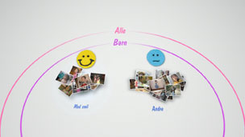
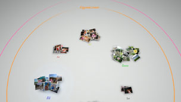

Organisere fotografier
Gruppere fotografier
Du kan velge hendelser, og deretter gruppere fotografiene i disse valgte hendelsene, ved å velge ett av alternativene som beskrives under. Velg hendelsene som inneholder fotografiene som du vil gruppere, og trykk på  -knappen, deretter velger du
-knappen, deretter velger du  (Gruppe). Hvis du vil begrense antall grupperte fotografier som vises, velger du en gruppe eller grupper som inneholder fotografiene som du vil gruppere, og bruker deretter et annet alternativ under (Gruppe) til å gruppere fotografiene.
(Gruppe). Hvis du vil begrense antall grupperte fotografier som vises, velger du en gruppe eller grupper som inneholder fotografiene som du vil gruppere, og bruker deretter et annet alternativ under (Gruppe) til å gruppere fotografiene.
| Dato/tid | Grupper etter datoen og klokkeslettet for når fotografiene ble tatt. |
|---|---|
| Antall personer | Grupper etter antall personer i fotografiene. |
| Aldersgruppe | Grupper etter til alderen til personene i fotografiene. |
| Uttrykk | Grupper etter ansiktsuttrykkene til personene i fotografiene. |
| Farge | Grupper etter fargene som vises i fotografiene. |
| Kameratype | Grupper etter kameramodellen som ble brukt til å ta fotografiene. |
| Spill | Grupper etter spilltittel. |
| Album | Grupper etter album som har blitt opprettet under  (Foto) i XMB™-skjermen. (Foto) i XMB™-skjermen. |
Tips
- Med [Velg alle] gruppereres alle bilder i [Biblioteksområde] i henhold til alternativet du valgte.
- Gruppering er basert på analyser av fotografiene, og i noen tilfeller kan det hende at resultatet ikke ble som du forventet.
- Du kan lage en spilleliste av de grupperte fotografiene.
Eksempler på grupperte fotografier: Fotografier av barn som smiler
1. |
Grupper fotografier ved å velge |
|---|---|
2. |
Velg gruppen som heter [Barn] og trykk på |
3. |
Velg  |
Eksempler på grupperte fotografier: Fotografier som viser en blå himmel
1. |
Grupper fotografier ved å velge |
|---|---|
2. |
Velg gruppen som heter [Liggende/annet] og trykk på |
3. |
Velg  |
Slette fotografier
For å slette et fotografi eller album, velg fotografiet eller albumet, trykk på -knappen, og velg deretter  (Slett).
(Slett).
Tips
Hvis du sletter fotoer i [Biblioteksområde], slettes fotoene også fra systemminnet på PS3™-systemet.